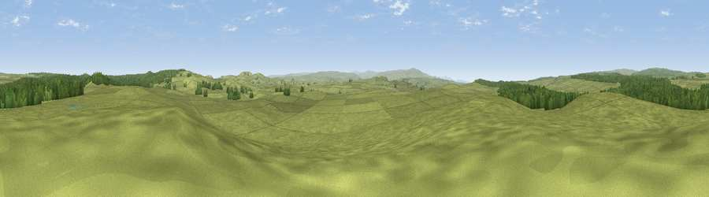

Viewpoint c11416_7387
#16934 in England · top 43% of its area beats it · —The view, rendered

A 360° render of this exact spot computed from the terrain model, tree cover and land cover — summer colours, afternoon light, calibrated against photographs of famous viewpoints. Real trees, hedges and buildings will differ in detail.
The panorama
Grey silhouette: terrain skyline in each direction (720 bearings, Earth curvature and refraction included). Dashed green: skyline with trees (+15 m) and buildings (+8 m) as obstacles. Blue strip: how far the ground is visible on each bearing.
Where the view opens
Wedge length = distance to the farthest visible ground on that bearing (vegetation-aware). Rings at 10, 25 and 50 km.
What fills the view
84% grassland · 16% woodland
Angular shares of the visible panorama (visual magnitude), not map area. Landscape diversity 0.20 (0–1 Shannon).
Key numbers
More beautiful places nearby
The staircase of upgrades: each row has a higher view potential than everything closer. Driving times are estimates from straight-line distance, calibrated against real road routing — check an actual route before setting out.
| Place | Direction | Drive | Score |
|---|---|---|---|
| Viewpoint c11406_7438 | E · 3 km | ~6 min | 56.7 |
| Viewpoint c11409_7452 | E · 3 km | ~8 min | 64.2 |
| Walltown Hill | S · 4 km | ~9 min | 64.9 |
| Viewpoint near Melkridge | SE · 5 km | ~12 min | 69.0 |
| Viewpoint near Melkridge | SE · 6 km | ~12 min | 70.6 |
| Viewpoint near Bardon Mill | E · 11 km | ~20 min | 71.0 |
| Viewpoint c11634_7288 | NNW · 12 km | ~22 min | 71.8 |
| Viewpoint near Bewcastle | W · 12 km | ~23 min | 73.2 |
55.03100, -2.48064 · source: screening · position refined by local search. Computed location — check access rights before visiting.